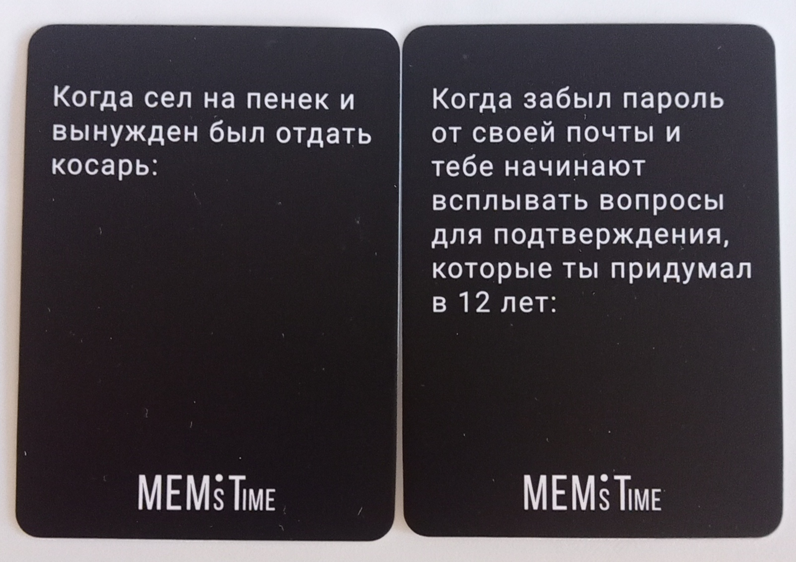
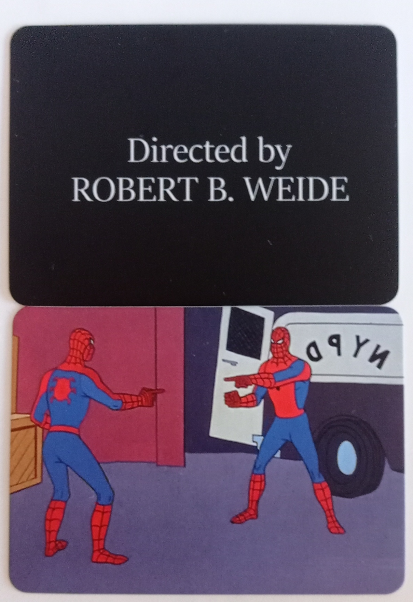

Mem's time
«Mem's Time» — это карточная настольная игра для 2–12 человек. В ней вы должны будете подобрать мем для определённой ситуации. Я не смог найти конкретные правила для нашей версии «Mem's Time», однако существуют правила для других версий этой игры, и я предполагаю, что правила у всех этих игр приблизительно схожи, хотя я никогда в неё не играл. Я рассчитываю, что она будет крайне ржачной. В правилах указаны условия победы и начисление очков, но также говорится, что можно играть и без них, просто ради веселья. Поэтому я здесь просто опишу процесс игры.
как проходит игра
(По правилам из другой «Mem's time») каждому игроку выдается по пять карт с фразами, после чего ведущий берет три карты с мемами и выбирает одну из них,
по его мнению, самую смешную, и кладет эту карту с мемом в центр стола, а остальные две кладет в сброс. Теперь игроки поочередно по часовой стрелке выбирают
из своих карт с фразами и ситуациями самую подходящую карту и кладут ее рядом с мемом. Чья комбинация наиболее смешная, получает 1 победное очко. После чего
игроки добирают в свою руку недостающие карты ситуаций и фраз. Игра продолжается до тех пор, пока кто-то из игроков не наберет 5 победных очков, либо пока не
закончатся карты, либо пока вам не надоест. Также можно сыграть наоборот, когда ведущий зачитывает ситуацию или фразу, а вы должны подобрать подходящую к этой
ситуации карту с мемом.
элементы игры и правила
игровое поле
стол стол стол стол стол стол стол стол стол стол стол стол стол стол стол стол стол стол стол стол стол стол стол стол стол стол стол
карты фраз и ситуаций

карты мемов

Остальные, более глубокие механики игры мы уже разберём по ходу геймплея за столом. :3